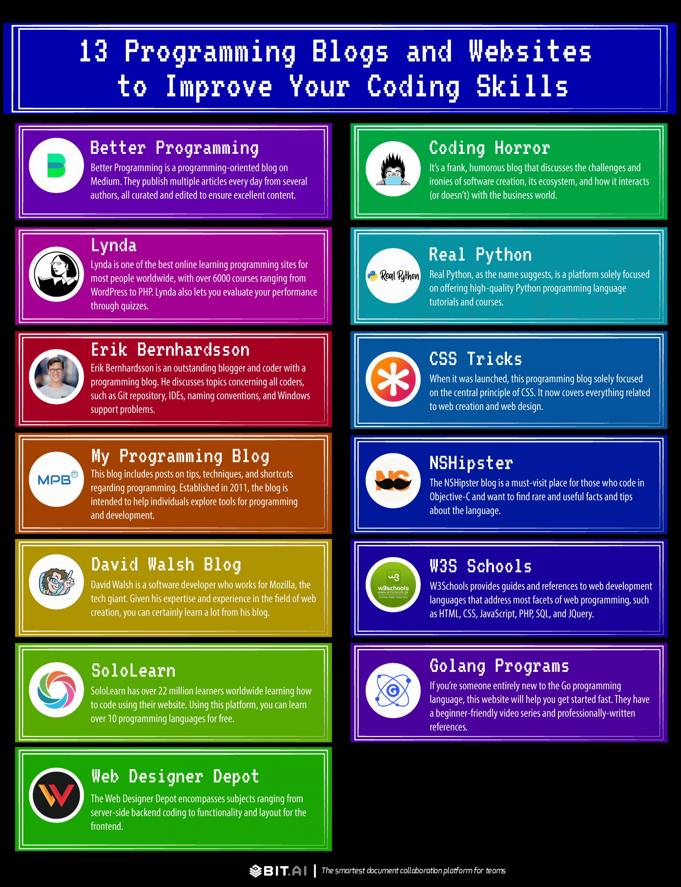
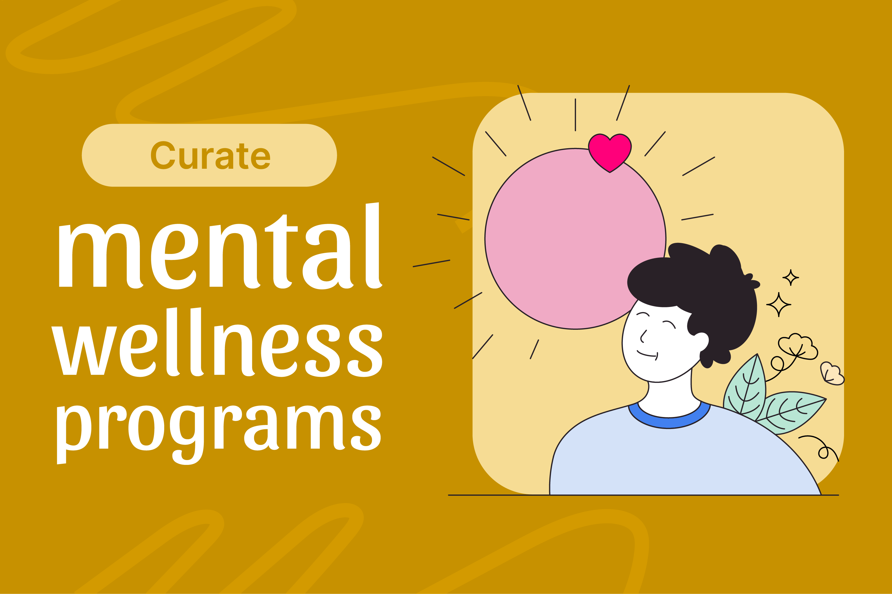
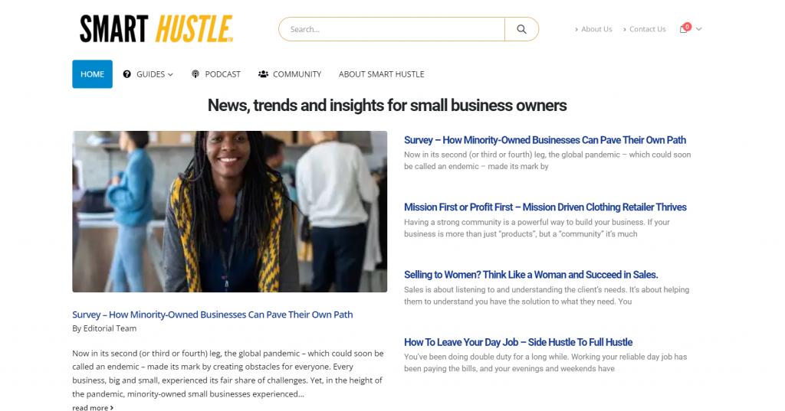

إدارة المقالات
إدارة شاملة للمقالات والمحتوى
منشور
342
مقال منشور
مسودة
89
مقال في المسودة
معلق
23
في انتظار المراجعة
المشاهدات
45.2K
إجمالي المشاهدات
البحث والتصفية
قائمة المقالات
485 مقال
| المقال | الفئة | الحالة | المشاهدات | التعليقات | التاريخ | الإجراءات |
|---|---|---|---|---|---|---|
|

أسرار الكتابة الإبداعيةكيفية تطوير مهارات الكتابة الإبداعية |
الكتابة الإبداعية | منشور | 1,234 | 45 | منذ يومين |
|
|

تطوير الذات في العصر الرقمياستراتيجيات تطوير الذات في عالم التكنولوجيا |
تطوير الذات | مسودة | 0 | 0 | منذ أسبوع |
|
|

كيفية كتابة محتوى جذابنصائح لكتابة محتوى يجذب القراء |
كتابة المحتوى | معلق | 567 | 23 | منذ 3 أيام |
|
عرض 1 إلى 10 من 485 نتيجة